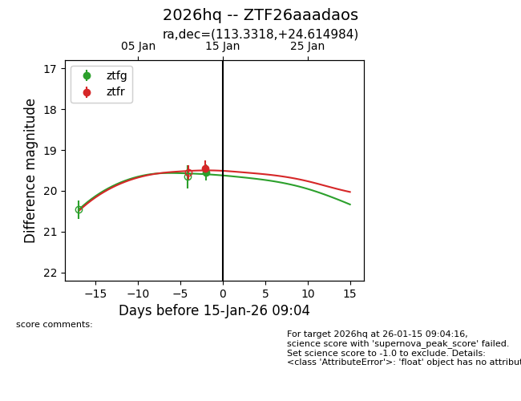
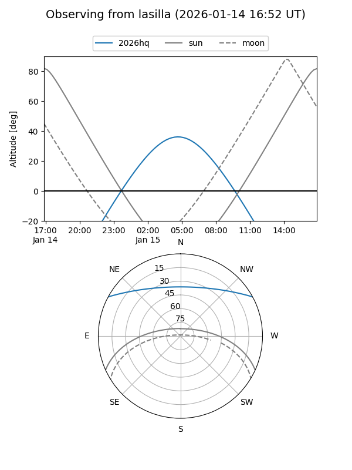
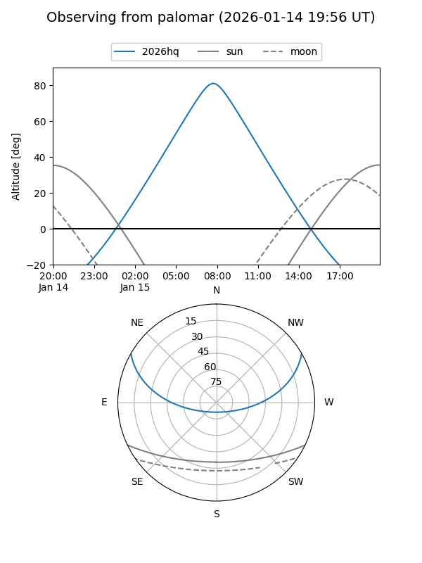

2026hq
Target 2026hq at 2026-01-13 10:45
Aliases and brokers:
FINK: link
Lasair: link
ALeRCE: link
TNS: link
YSE: link
alt names
ZTF26aaadaos (ztf,fink_ztf)
2026hq (tns,yse)
Coordinates:
equatorial (ra, dec) = 113.3318,+24.61498
equatorial (HMS+DMS) = 07:33:19.63,+24:36:53.94
galactic (l, b) = (194.6498,+19.69361)
Flags:
Photometry:
last ztfg=19.55, ztfr=19.45
1 ztfg, 1 ztfr detections
Lightcurve

Visibility


Additional plots